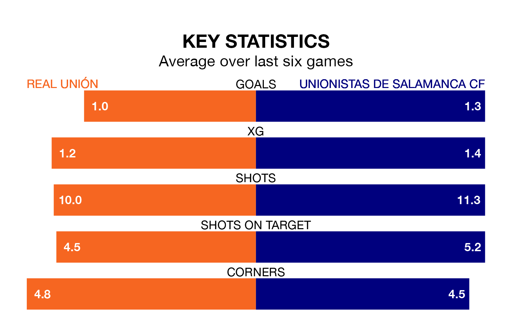

Unionistas de Salamanca CF travel to Real Unión on late Sunday in Primera Division RFEF Group 1.
The visitors come into the game on the back of a win in their last match, having beaten Barcelona B 4-1 at home, with two goals from Borislav Ivaylov Stankov, one from Mario Losada Laguna and one from Jorge Rastrojo Moro.
Unión, meanwhile, lost their last match, 3-1 against Sestao River Club, with their goal scored by Alejandro Cerdá Agulló.
With 28 goals in 32 games so far this season, Unionistas de Salamanca are scoring at below the league average rate with 0.9 goals per game. But they are conceding fewer than average too, letting in 25 goals at a rate of 0.8 per game.
Unión, meanwhile, are above average scorers, with 1.2 goals per game, compared to a league average of 1.1. They have conceded 1.4 goals per game.
In Alberto Solís Gómez, the hosts have one of the league's sharpest shooters so far this season. He has notched eight goals in 24 appearances, to sit second in the scoring charts.
His goal rate of one every 257 minutes is slightly quicker than that of Ivaylov Stankov, the away side's top scorer with a goal every 228 minutes, and a total of four goals in 20 games.
Unión are in disappointing form in Primera Division RFEF Group 1, with one win and two draws from their last six games.
With three wins and a draw over that period, Unionistas de Salamanca's form is better – they have taken 10 points from 18, compared to Unión's five.
In the last five years, Unión and Unionistas de Salamanca have played each other on four occasions. Unión won one of them, Unionistas de Salamanca two, and they drew once.
On average, Unión scored 1.0 goal and Unionistas de Salamanca 1.0 in those matches.
Their last meeting was on October 1, when Unionistas de Salamanca won 1-0 at home.
The home team are 14th in the table after 32 games, of which they have won nine and drawn nine, earning 36 points.
Unionistas de Salamanca are six places ahead of Unión in eighth, with 11 wins and 12 draws putting them on 45 points.
Updated: 15:40 (UTC), 18/04/24